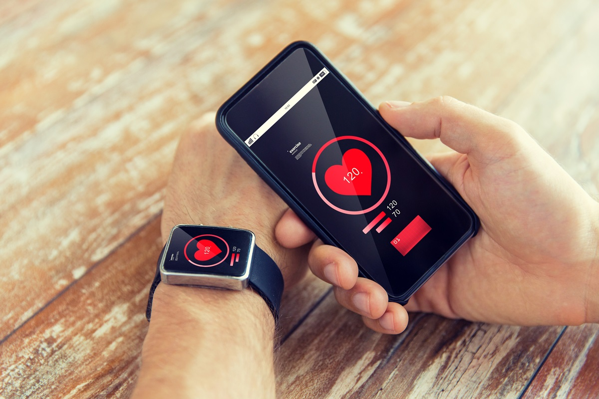

The Impact of Technology on the Watch Industry

Technology has reshaped the watch industry in remarkable ways, blending innovation with tradition. While it has unlocked new possibilities for functionality and design, it has also posed unique challenges for traditional watchmakers. Let’s explore the positive and negative impacts of technology on watches, its potential to boost sales, and what it all means for the future of this timeless accessory.
Positive Impact of Technology on Watches
Technology has enhanced the watch industry in various ways:
- Enhanced Functionality: Smartwatches now offer features like health tracking, notifications, and GPS, making watches indispensable in daily life.
- Precision Engineering: Innovations like atomic timekeeping have made modern watches incredibly accurate.
- Customization: With AI and 3D printing, consumers can personalize designs for a unique and exclusive look.
- Global Reach: E-commerce platforms and digital marketing have opened the market to a global audience.
Negative Impact of Technology on Watches
Despite its advantages, technology has also introduced challenges:
- Competition: Smartwatches and smartphones overshadow traditional watches, affecting their market share.
- Counterfeiting: Advanced manufacturing has made it easier for counterfeiters to mimic luxury designs.
- Loss of Craftsmanship: Mass production risks sidelining traditional handcrafted watchmaking.
- Environmental Impact: Smartwatches contribute to e-waste due to frequent upgrades and battery replacements.
Using Technology to Boost Watch Sales
Brands can leverage technology to enhance sales:
- Virtual Try-Ons: AR technology allows customers to visualize watches on their wrists before buying.
- Blockchain: Ensures authenticity and combats counterfeit products.
- Data-Driven Marketing: Personalized recommendations based on customer preferences improve conversion rates.
- Subscription Services: Offering rental or subscription-based models allows customers to explore various styles.
Conclusion
Technology has revolutionized the watch industry, balancing tradition with innovation. While challenges remain, embracing new advancements while preserving the craftsmanship of traditional watches can help the industry thrive. Whether it’s a smart wearable or a timeless classic, watches continue to symbolize style, status, and functionality.